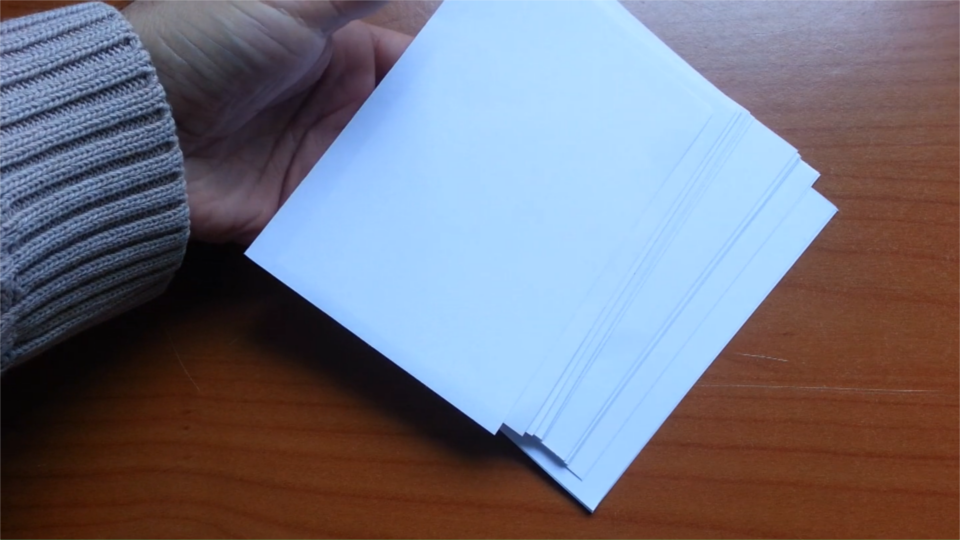
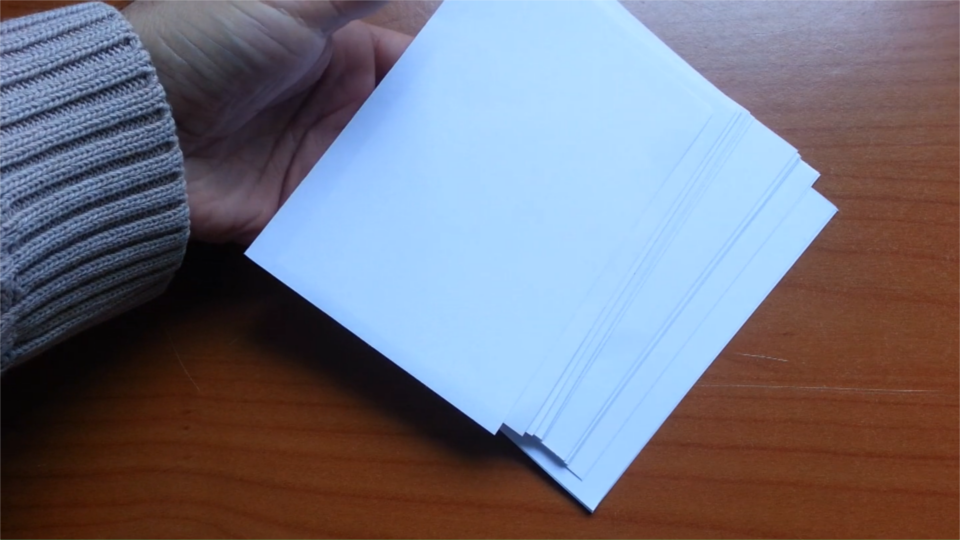

Un semplice block notes realizzato con delle riviste e materiale che abbiamo incasa
Procuratevi 10 fogli A4 e tagliateli a meta, in modo da vere 20 fogli A5.

Tagliate a metà anche i 20 fogli A5 in modo da avere 40 piccoli fogli.
 

Ordinate i 40 fogli e teneteli fermi con delle mollette.

Incollate la parte superiore con della colla vinilica, va benissimo anche il bostik o la colla a caldo.

Il block notes è pronto, potete usarlo strappando via le pagine consumate, oppure potete realizzare una copertina come segue.
Procuratevi due pezzi di cartoncino, con le stesse misure dei fogli, io ho usato il cartone della scatola del riso.
Prendete una rivista e segnate le dimensioni del rettangolo per poi piegare il foglio, in modo da avere delle guide di riferimento.


Incollate il cartoncino sulla rivista rispettando le guide.
Ritagliate la rivista lasciando un centimetro di bordo, come in foto.

Tagliate anche gli angoli, come in foto.
Piegate i margini verso l'interno come in foto ed incollate.
Tagliate un altro pezzo di rivista, questa volta leggermente più piccola delle dimensioni dei foglio ed incollatela nella parte posteriore della copertina.

Posizionate una copertina sopra e l'altra sotto i fogli precedentemente incollati.

Incollate il tutto con la vinavil oppure il bostik o la colla a caldo, come avete fatto con il blocco di fogli.
Aggiungete un po di colla anche tra il primo foglio e la copertina, e l'ultimo foglio e la copertina.

Ritagliate un pezzetto di carta largo circa 2,5 centimetri e poco più lungo del block notes ed incollatelo sulla parte superiore, come in foto.

Per facilitare l'apertura piegate il cartoncino superiore, come in foto.
Per aumentare la resistenza potete aggiungere delle graffette, è consigliabile metterle prima della striscia, in modo da coprirle.

Il block notes è terminato.